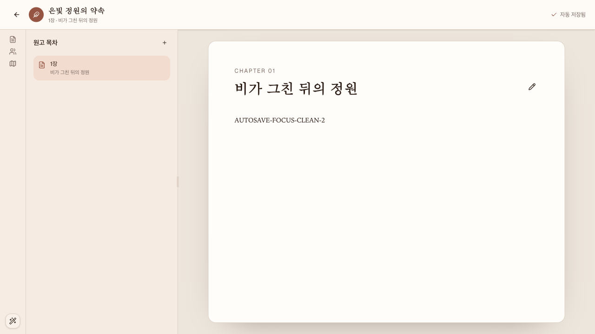

브라우저 버그 탐색 보고서
AutosaveIndicator 저장 상태와 복구 포커스
생성 시각:
탐색 범위
/projects/silver-garden/write의 AutosaveIndicator만 대상으로 기본 saved/editing/saving 상태, 본문 자동 저장, PUT 500 실패와 재시도, PUT 409 revision conflict와 충돌 dialog 진입, status/alert·라벨·키보드·포커스·콘솔·네트워크를 확인했다.
제외 범위
제품·테스트·config·OpenAPI·domain·기존 문서 수정, 새 서버, 외부 네트워크, 다른 집필 컴포넌트 감사, 실제 backend 저장과 티켓 변경은 수행하지 않았다.
실행 환경
- 대상 라우트
http://127.0.0.1:4173/projects/silver-garden/write- 시작 상태
- 인증 없음, clean MSW
silver-gardenseed. 각 확정 재현 전localStorage와sessionStorage를 비우고 route를 다시 로드했다. - 뷰포트
- 실제 세션 1280x720. 지정된 375x800과 1280x800은 허용된 Playwright 도구에 viewport 변경 기능이 없어 미확인.
- 실행 기준
7eff1ea85ea67fb4233b1797f65496dc30274797(main)
결과 요약
등록한 버그
이 AutosaveIndicator 한정 범위에서 새로 등록할 비중복 확정 버그가 없습니다.
중복된 관찰
ticket-worker #12 · ready · 심각도 Medium: 자동 저장 실패 뒤 키보드로 원고 저장 다시 시도를 실행하면 PUT 200과 자동 저장됨 전환 뒤 포커스가 accessible name 없는 BODY로 이동했다. 1차 AUTOSAVE-FOCUS-CLEAN-1, 2차 AUTOSAVE-FOCUS-CLEAN-2의 독립 clean seed 실행에서 같은 결과를 확인했다. 먼저 등록된 ManuscriptEditor 보고서의 bug-001, 설계, 구현 계획과 동일한 결함이므로 별도 티켓을 등록하지 않았다.

BODY로 기록됐다.제외한 관찰
favicon.ico 404는 AutosaveIndicator 흐름 밖의 정적 자원 문제라 제외했다. 정상 상태 전환, error alert/라벨/visible focus, conflict alert·버튼·dialog 포커스는 요구대로 동작해 등록하지 않았다.
수행한 검사
planner_setup_page를project인자 없이 정확히 한 번 실행했다.- DOM 변경 기록에서
편집 중 → 저장 중 → 자동 저장됨과 원고 포커스 유지를 확인했다. - PUT 500에서
role="alert",저장 실패, 이름 있는 재시도 버튼과 visible focus ring을 확인했다. - PUT 409에서
저장 충돌,충돌 해결 열기, 자동 dialog 진입, Escape 후 원고 포커스 복귀, 키보드 재진입을 확인했다. - API 네트워크에서 원고 PUT 200과 scene-diffs POST 200을 확인했다.
- 콘솔의 유일한 error는 제외한
favicon.ico404였다. - clean seed 2회에서 재시도 성공 후
BODY포커스를 확인했다.
제약 및 미확인 항목
허용된 playwright-test 도구에는 viewport resize가 없어 375x800과 1280x800을 확인하지 못했고, 실제 세션 1280x720만 검증했다. 실제 OS 스크린리더 음성 출력과 실제 backend는 미확인이다. 실패·충돌 응답은 현재 탭의 fetch만 가로챘고 MSW seed 외 영구 데이터는 변경하지 않았다.